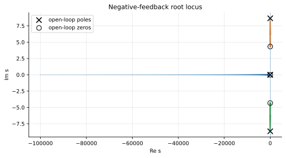
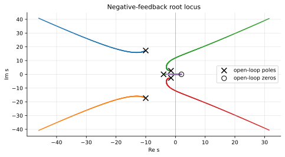

Source: AE511_HW8.pdf (1 page). Questions 3–4 quote textbook problems not included in this upload; Problems 1–2 are worked directly.
Problem 1 — Stabilize an unstable second-order plant
Consider the following plant
Use MATLAB’s rlocus command to answer the following questions.
- Can this plant be stabilized with proportional control?
- Can this plant be stabilized with a lead controller of the form \(C(s)=K\frac{s+5}{s+50}\)?
- Choose the parameter K in the lead controller such that the percent overshoot for a unit step is 10 percent. Note that clicking on the loci in an rlocus plot will show various parameters including the percent overshoot.
- Plot the step response of the closed loop system. Is the percent overshoot near the desired value? If the percent overshoot is considerably different than the desired value, offer an explanation.
Derive the proportional and lead characteristic polynomials and check Routh stability before testing transient overshoot.
Worked solution — answered by question part
Part (1) — Can proportional control stabilize the plant?
The plant is \(G(s)=10/(s^2-1.5s+25)\). Its poles are \(0.75\pm j\sqrt{25-0.75^2}\), in the right half-plane, so the uncontrolled plant is unstable.
With unity negative feedback and proportional gain \(K\), the characteristic polynomial is \(s^2-1.5s+25+10K\). Proportional gain changes only the constant term, leaving the \(s\) coefficient negative. For a stable second-order polynomial with positive leading coefficient, the \(s\) coefficient must be positive. Therefore no real positive proportional gain can stabilize this plant (and negative gain does not fix the negative damping term).
Part (2) — Can the specified lead controller stabilize the plant?
Now use the assigned lead controller \(C(s)=K(s+5)/(s+50)\). The closed-loop characteristic polynomial is
The Routh first-column conditions for a cubic \(s^3+a_2s^2+a_1s+a_0\) are \(a_2>0\), \(a_1>0\), \(a_0>0\), and \(a_2a_1>a_0\). These produce
The strongest constraint is
Part (3) — Choose K using the 10% overshoot damping line
This does stabilize the plant. A desired textbook second-order overshoot of 10% corresponds to \(\zeta\approx0.591\). On the root locus, choose a complex pole near that damping line; for this system \(K\approx65\) gives poles approximately \(-6.73\pm j9.12\) (damping \(\approx0.594\)) and a third pole near \(-35.0\).
Answer using the pole-damping criterion: \(K\approx65\) puts the dominant complex poles near a \(\zeta\approx0.59\) line. This is a root-locus estimate, not a guarantee of 10% overshoot in the full step response.
Part (4) — Check the actual step overshoot and explain disagreement
Critical learning point: the actual closed-loop numerator is \(10K(s+5)\), with a zero at \(-5\). The second-order formula assumes no important numerator zeros and an adequately dominant pair. Here the zero substantially changes the transient; the exact simulated step overshoot for \(K=65\) is roughly 63%, not 10%. This directly answers the assignment's request to explain a disagreement between the pole-damping estimate and observed overshoot. The given lead shape with a gain-only parameter does not guarantee the 10% transient goal.
s=tf('s'); G=10/(s^2-1.5*s+25); K=65;
C=K*(s+5)/(s+50); T=feedback(C*G,1);
figure; step(T); grid on; title('Lead-controller closed-loop step');
stepinfo(T)Self-check: Does the full closed-loop step actually meet the desired overshoot?
Problem 2.1 — Root locus for \(G_1(s)=(s-2)/(s^2+10s+100)\)
Attach rough sketches and MATLAB plots of the root locus of the following transfer functions. Assume negative feedback unless mentioned otherwise. For the rough sketches, you can hand draw on top of MATLAB’s pzmap plots.
1. \(G(s)=\frac{s-2}{s^2+10s+100}\). Show the root locus for both negative feedback and positive feedback.
Use the sign of feedback to write D(s)±K N(s)=0 and identify real-axis root-locus segments.
Worked solution — answered by question part
negative feedback — Root locus and stability for negative unity feedback
Poles are \(-5\pm j\sqrt{75}=-5\pm j8.660\) and the zero is at \(+2\). There are \(n=2\) poles and \(m=1\) zero, so one branch ends at the finite RHP zero and one goes to infinity. For negative feedback, the characteristic polynomial is
Stability: For nonnegative gain, the characteristic polynomial is stable for \(0\le K<50\); it crosses the imaginary axis at the endpoint.
positive feedback — Root locus and stability for positive unity feedback
Routh requires \(10+K>0\) and \(100-2K>0\). For \(K\ge0\), stability holds for \(0\le K<50\); at \(K=50\) a pole reaches the origin and larger gains are unstable. For positive feedback, the polynomial becomes \(s^2+(10-K)s+(100+2K)\). For \(K\ge0\), stability requires \(K<10\); at \(K=10\) the damping term vanishes, causing imaginary-axis poles. These exact checks should match the two root-locus sketches.
For nonnegative gain, positive-feedback stability requires \(K<10\); check the branch departure from the complex poles and the zero at +2 on the positive-feedback locus.
Self-check: Were positive and negative feedback loci distinguished?
Problem 2.2 — Root locus for a four-pole / three-zero plant
2. \(G(s)=\frac{(s+2)(s^2+5s+25)}{(s-1)(s+30)(s^2+10s+100)}\).
Count poles/zeros, asymptotes and RHP crossings, then check closed-loop stability as gain varies.
Worked solution and reasoning
The printed transfer function is
There are four open-loop poles (including an unstable pole at \(+1\)), three finite zeros, and one asymptote to infinity. The finite zeros are \(-2\) and \((-5\pm j\sqrt{75})/2=-2.5\pm j4.330\). The other poles are \(-30\) and \(-5\pm j8.660\) plus \(+1\). The one negative-feedback asymptote has angle \(180^\circ\) and centroid
Real-axis segments follow the odd-number-to-the-right rule. Confirm the path's exact crossings numerically with the characteristic equation \(D(s)+KN(s)=0\); a root-locus sketch is a path of closed-loop poles, not merely a connected drawing between open-loop poles and zeros.

Self-check: Are all poles and zeros included?
Problem 2.3 — Root locus for a fifth-order plant with an RHP zero
3. \(G(s)=\frac{s-2}{(s+4)(s^2+3s+9)(s^2+20s+400)}\).
Check centroid, possible break points, and departure angles for the high-order root-locus sketch.
Worked solution and reasoning
The third plant is
There are five poles, one finite zero at \(+2\), and four asymptotes for negative feedback at angles \(45^\circ,135^\circ,225^\circ,315^\circ\). The sum of open-loop poles is \(-4-3-20=-27\), so the asymptote centroid is \((\sum p-\sum z)/(5-1)=(-27-2)/4=-7.25\). The closed-loop characteristic is \(D(s)+K(s-2)=0\); its constant term becomes \(D(0)-2K\). At \(K=D(0)/2=(4)(9)(400)/2=7200\), a closed-loop pole passes through \(s=0\). Because a root-locus branch must terminate at the RHP zero \(+2\), sufficiently high positive gain cannot preserve stability.

Self-check: Were stationary breakaway points checked for allowed gain?
Problems 3 and 4 — Textbook Problems 6.55 and 6.64
Problem 3
Problem 6.55 from the 7th edition of Feedback Control of Dynamic Systems by Franklin, Powell, and Emami-Naeini. Note that the compensator/controller, \(D_c(s)\), used in parts h and i is simply a lead controller with gain, K. For part e, you can use MATLAB to create the Nyquist plot.
Problem 4
Problem 6.64 from the 7th edition of Feedback Control of Dynamic Systems by Franklin, Powell, and Emami-Naeini.
Problems 6.55/6.64 are missing from the provided packet; explain the method and wait for the exact problem statements.
Worked solution — answered by question part
Problem 3 — Textbook Problem 6.55
The supplied assignment provides only the reference and a note identifying a lead controller \(D_c(s)\) in parts (h) and (i). The rest of the original textbook statement is absent, so no complete numerical solution is possible.
Problem 4 — Textbook Problem 6.64
The original textbook question is not included in the uploaded PDF. Its transfer function, graph, and requested calculations are unknown.
Additional reasoning, cautions, and checks
The supplied PDF specifies only problem numbers from Feedback Control of Dynamic Systems (7th edition), not the questions or their plant data. A unique numerical answer is not possible. For 6.55, the assignment mentions a lead compensator and Nyquist plot, suggesting the method: read the plant, draw root locus, set \(C(s)=K(s+z)/(s+p)\), enforce the required pole-angle condition, then check stability and margins. For 6.64, even the topic is not specified by the provided page; do not invent it.
Self-check: Were absent textbook details left unresolved?